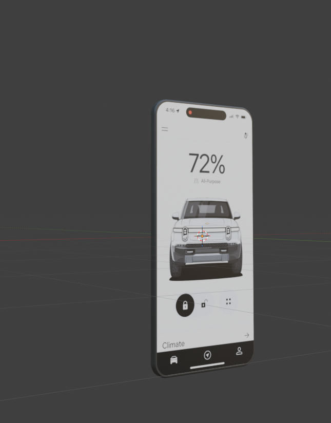
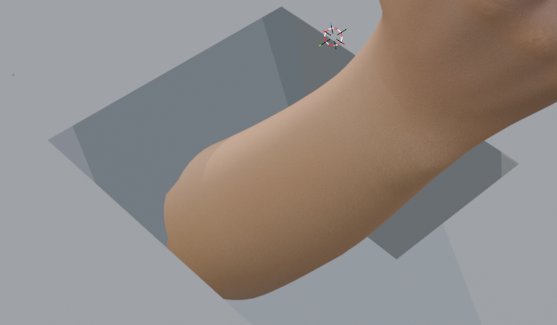
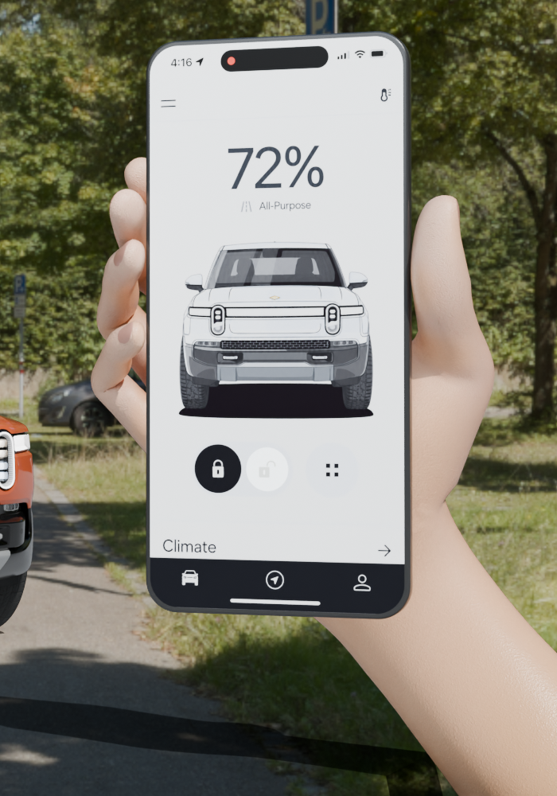
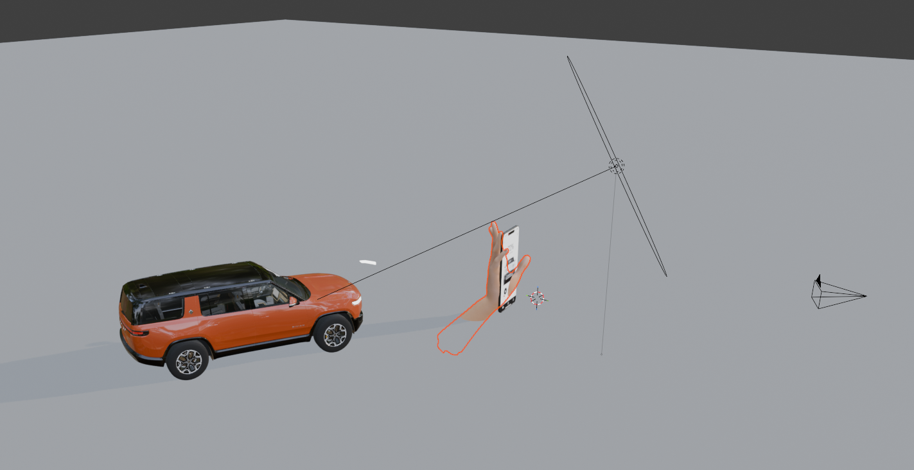
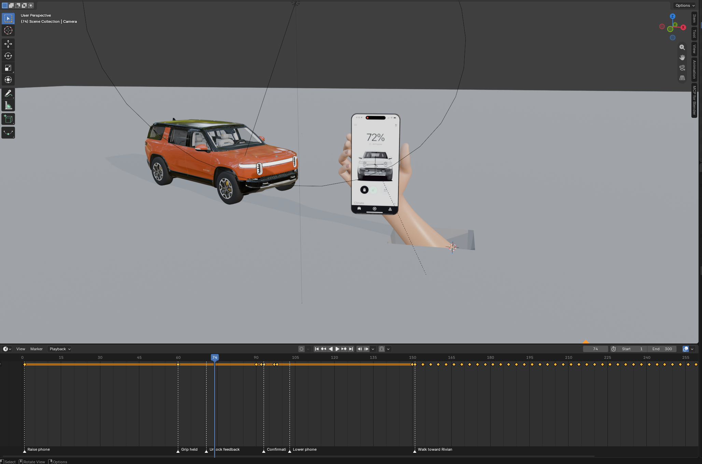
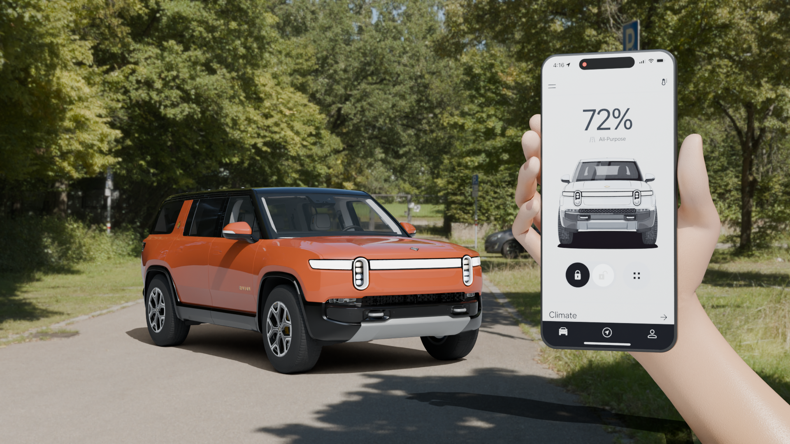
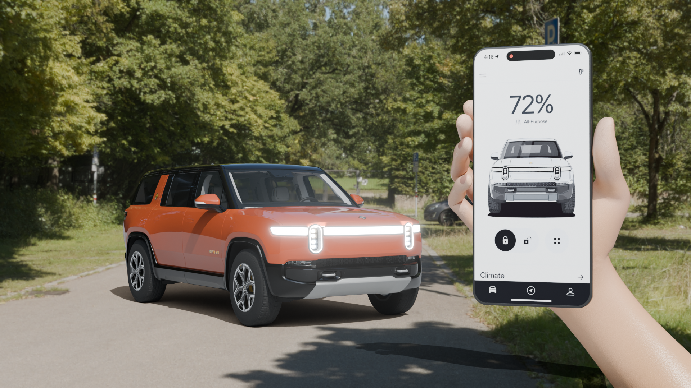
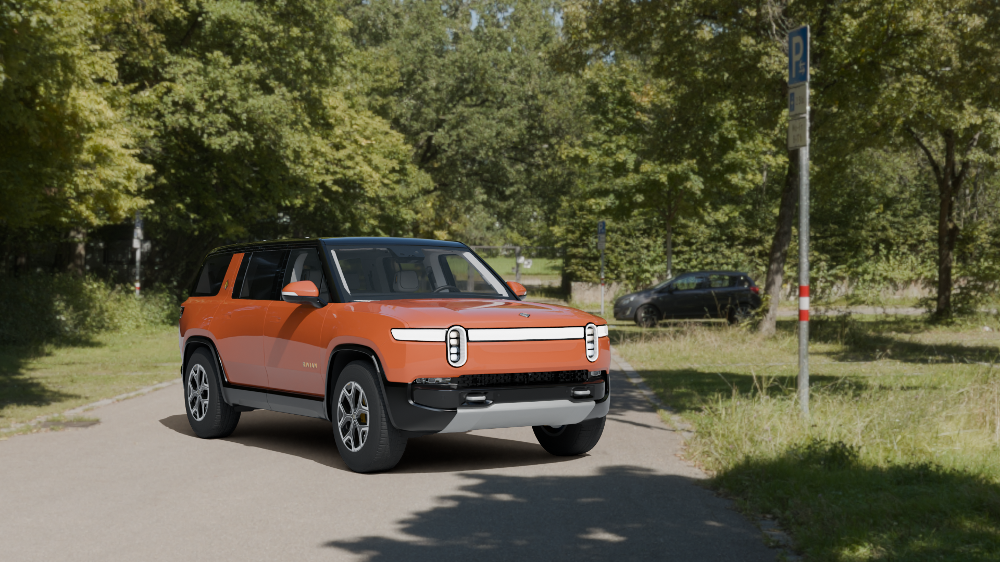
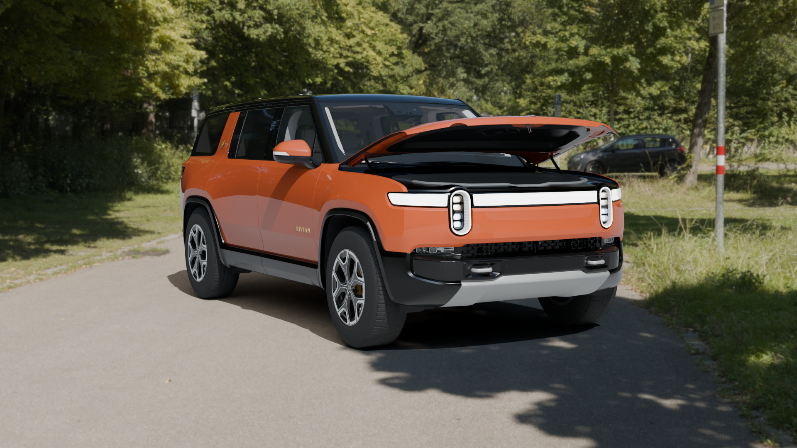

Rivian First-Person Vehicle Interaction — Blender Prototype
Week 6 · Final homework submission
1. Project Introduction
The goal of this Blender prototype was to create a first-person sequence showing a person using a phone to unlock a Rivian, receiving vehicle light feedback, approaching the car, and watching the front trunk open. The project developed from an initial phone-and-vehicle composition into a complete 10-second animated sequence.

2. Initial Concept and Planning
The initial sketches explored different ways to position a vehicle and a phone interface together. The selected exterior composition put the phone in the foreground and the Rivian behind it, establishing the relationship between an app action and the vehicle response.

3. Building the 3D Scene
The Rivian R1S model was imported from Sketchfab rather than modeled from scratch. The early scene positioned the vehicle beside the phone so both the interface and the vehicle remained readable.
An outdoor parking environment was then added to establish reflections and a setting for the interaction. Later camera placement adapted this initial arrangement into the first-person view shown in the animation.

4. Creating the Phone
The phone body began as a plane with adjusted proportions, rounded corners, and added thickness. Beveling helped define the edges, while the screen and body received separate materials.
The Rivian interface image was applied to the screen and positioned to read as a phone display. In the completed scene, the phone and hand move together so the interface faces the first-person camera when raised.



5. Hand Rigging and Positioning
The scene includes an imported hand model and a right-hand armature with 58 bones. The original viewport images document work around the phone grip and the wrist, while the final render shows the hand positioned around the phone.
These images support a comparison between the earlier viewport setup and the completed grip. A clear recording of individual finger-bone adjustments or a matched before-and-after of unnatural finger positions was not retained, so the exact editing steps are not claimed here.



6. Environment and Lighting
The parking-lot HDRI supplies the outdoor appearance and reflections. A ground surface and scene lighting help the vehicle sit within that environment, with the camera positioned to retain the interaction in view.
The original setup screenshot shows the camera, lighting, and arm placement, and the early render records the environmental appearance. Ground intersection and shadow preservation were review concerns; the available screenshots do not prove that every contact issue was completely eliminated.


7. First-Person Camera Animation
The sequence raises the phone into view, holds it for the unlock interaction, and then lowers it. Vehicle feedback follows the phone action before the camera moves toward the Rivian.
The saved V3 camera animation refines the approach and introduces a gradual downward tilt toward the frunk. The timeline screenshot records animation keys; the videos below are excerpts and previews of the completed animation, not recordings of the editing process.

8. Vehicle Unlock Feedback
The vehicle response uses animated headlight emission, with the light flash following the phone unlock cue. The V3 screen highlight appears around frames 76–86; the headlight rise begins after frame 82.
Frames 82 and 90 show the lighting before and during the flash. V3 refined the phone control highlight while retaining the vehicle flash, making the app action and vehicle response easier to connect.


9. Frunk Animation
Existing hood geometry is grouped under the animated FRUNK_HINGE_CTRL controller. Rotation around that hinge opens the hood later in the sequence, after the phone interaction and as the camera approaches.
The closed, partially open, and fully open frames below show the result of that timing. V3 refined the existing tub, rim, and floor materials without adding new storage geometry; the diagnostic views help inspect the interior and hood clearance.
The first-person angle still partly hides the lower frunk floor behind the front rim. The selected renders are useful clipping checks, but they are not proof that every frame is free of intersections.




10. Challenges and Iterations
The earlier documentation identified consistent phone corners and matching the vehicle to the environment as challenges. The phone-body screenshot and later textured phone show the progression from basic geometry to a readable interface.
Hand placement required inspecting the grip and wrist in relation to nearby geometry. The earlier viewport views and final grip detail show the available iteration evidence, but do not justify claiming a complete fix for every finger or ground-plane intersection.
Unlock feedback needed a clear relationship between the phone and the vehicle lights. The final before/during frames show the flash, while V3 refined the screen highlight without changing the existing headlight animation.
The frunk interior was easier to inspect from elevated views than from the first-person camera. Material refinements and a closer, slightly downward camera approach improved its presentation, although the lower floor remains partly occluded.
Final Animation
The completed V3 animation combines the phone raise, unlock cue, vehicle light feedback, phone lowering, camera approach, and frunk opening. The actual final MP4 is embedded below at its original 16:9 aspect ratio, with native playback and fullscreen controls.
Final output: 1920 × 1080, 30 fps, 300 frames, 10 seconds. The three stills below show the start, unlock response, and completed open-frunk composition.
12. Reflection
This project brings together basic modeling, image textures, imported assets, rig positioning, lighting, and animation. The development images show how much the result depends on the relationship between the phone, hand, vehicle, and camera.
Animation makes the intended interaction clearer than the original static composition because the app action and vehicle response unfold in order. Further refinement could focus on finger contact, checking intersections throughout the motion, and making the frunk floor more visible without losing the first-person perspective.
13. References and Resources
The following resources were recorded in the earlier documentation or supplied as known project resources. The hand model and parking HDRI are present in the scene, but their original download links were not recorded in the available documentation.
- Blender — modeling, rigging, animation, rendering, and video sequencing
- Sketchfab — Rivian R1S (2022) vehicle model
- Previously documented Blender video tutorial
The editable Blender project is retained locally alongside this page. It exceeds the ordinary Git file-size limit and is excluded from the website commit. Its external parking HDRI and installed Blender node-library dependencies remain accessible on the project computer.